lorenz_partial_additive_splitmode_p30_obsnoise005_top3nd_init15_autodim__lc_obsnoisescale_sweepProject: Lorenz_INDpartial_NDInitSweep_autodim_D1_NormTrue__JacobianODE
Launched: 2026-04-23T05:00:12Z
Completed: 2026-04-24T23:50:19Z
Outcome: complete_with_failures
Git: latent-JacobianODE @ 162549a
Expected runs: 108
lorenz_partial_additive_splitmode_p30_obsnoise005_top3nd_init15_autodim__lc_obsnoisescale_sweepDescription
Lorenz partial additive coupling, obs_noise=0.05, prediction_steps=30, traj_init_steps=15. Split-mode loss (reconstruction_mode='uniform' for encoder-decoder round-trip; trajectory rollout uses 'most_recent' at train and val via trajectory_loss_most_recent=true). 108-run sweep: 3 n_delays {45, 80, 85} × 9 LC weights × 4 obs_noise_scale values. n_target_dims picked by PCA-auto (threshold=0.99) per n_delays.
Hypothesis
Same noise-injection hypothesis as the obsnoise001 companion: at the higher data noise (obs_noise=0.05), the data-noise budget is already larger, so the effective sweet spot for obs_noise_scale should sit relatively lower as a fraction of data noise (since the latent is already seeing substantial perturbations from the data side). At obs_noise_scale=0.03 the total noise variance is ~0.058 — comparable to the data noise itself; at 0.003 it's ~0.0501 — barely incremental. Expect: - Improvement vs obs_noise_scale=0 baseline on λ₃ accuracy is smaller in absolute magnitude than at noise=0.01 (the high-data- noise runs already had larger best-spectrum errors), but should still be detectable in the same direction. - Best obs_noise_scale at noise=0.05 ≤ best obs_noise_scale at noise=0.01 (relative to the noise level). - Trade-off with val/trajectory_loss is steeper here.
Success criteria
Swept axes (9): data.train_test_params.delay_embedding_params.n_delays, model.encoder.n_input, model.n_target_dims, model.n_target_dims_pca_auto, model.n_target_dims_pca_cum_var, model.params.input_dim, model.params.output_dim, training.lightning.loop_closure_weight, training.lightning.obs_noise_scale
Chosen run (by best_traj_loss): fm7rmgzm — traj_loss=0.00575, MASE=0.7909, R²=0.9849, LC loss=0.094, epoch=112.0
Swept-axis values at chosen run: data.train_test_params.delay_embedding_params.n_delays=85 · model.encoder.n_input=85 · model.n_target_dims=14 · model.n_target_dims_pca_auto=14 · model.n_target_dims_pca_cum_var=0.990074 · model.params.input_dim=14 · model.params.output_dim=196 · training.lightning.loop_closure_weight=0.001 · training.lightning.obs_noise_scale=0
⚠️ Matched-run count mismatch: expected 108 run_idx slots per the sentinel, matched 13 in wandb. The sweep may still be in progress, or some slots failed without producing wandb evidence.
Runs analyzed: 13 (expected 108)
| run_idx | run_id | data.train_test_params.delay_embedding_params.n_delays |
model.encoder.n_input |
model.n_target_dims |
model.n_target_dims_pca_auto |
model.n_target_dims_pca_cum_var |
model.params.input_dim |
model.params.output_dim |
training.lightning.loop_closure_weight |
training.lightning.obs_noise_scale |
best_traj_loss | best_MASE | R² | LC loss | epoch |
|---|---|---|---|---|---|---|---|---|---|---|---|---|---|---|---|
| 88 | fm7rmgzm |
85 | 85 | 14 | 14 | 0.990074 | 14 | 196 | 0.001 | 0 | 0.00575 | 0.7909 | 0.9849 | 0.094 | 112.0 |
| 92 | gi6e8ylf |
85 | 85 | 14 | 14 | 0.990074 | 14 | 196 | 0.01 | 0 | 0.00960 | 0.9063 | 0.9747 | 0.002 | 115.0 |
| 17 | 3pu1rcje |
45 | 45 | 7 | 7 | 0.990085 | 7 | 49 | 0.001 | 0.003 | 0.01267 | 1.0443 | 0.9648 | 0.260 | 27.0 |
| 61 | xzk42i22 |
80 | 80 | 13 | 13 | 0.990058 | 13 | 169 | 0.1 | 0.003 | 0.01336 | 0.9668 | 0.9639 | 0.008 | 88.0 |
| 89 | 3erdr6ob |
85 | 85 | 14 | 14 | 0.990074 | 14 | 196 | 0.001 | 0.003 | 0.01596 | 1.0520 | 0.9578 | 0.145 | 28.0 |
| 93 | nxx7jf6y |
85 | 85 | 14 | 14 | 0.990074 | 14 | 196 | 0.01 | 0.003 | 0.02259 | 1.1974 | 0.9402 | 0.008 | 48.0 |
| 90 | x4drkb9y |
85 | 85 | 14 | 14 | 0.990074 | 14 | 196 | 0.001 | 0.01 | 0.04105 | 1.5919 | 0.8920 | 0.172 | 6.0 |
| 18 | lyak3kp6 |
45 | 45 | 7 | 7 | 0.990085 | 7 | 49 | 0.001 | 0.01 | 0.04704 | 1.4698 | 0.8703 | 0.173 | 6.0 |
| 62 | l5frb6o5 |
80 | 80 | 13 | 13 | 0.990058 | 13 | 169 | 0.1 | 0.01 | 0.04741 | 1.5178 | 0.8747 | 0.006 | 11.0 |
| 94 | rfpfqyw0 |
85 | 85 | 14 | 14 | 0.990074 | 14 | 196 | 0.01 | 0.01 | 0.05319 | 1.8789 | 0.8597 | 0.036 | 6.0 |
| 91 | 4s70fwi7 |
85 | 85 | 14 | 14 | 0.990074 | 14 | 196 | 0.001 | 0.03 | 0.09863 | 3.2232 | 0.7410 | 8.160 | 8.0 |
| 63 | lcgeroxh |
80 | 80 | 13 | 13 | 0.990058 | 13 | 169 | 0.1 | 0.03 | 0.10370 | 3.2186 | 0.7237 | 0.002 | 1.0 |
| 16 | 2qkuiwzz |
45 | 45 | 7 | 7 | 0.990085 | 7 | 49 | 0.001 | 0 | 0.16122 | 3.8267 | 0.5560 | 0.021 | — |
obs_noise_scale| obs_noise_scale | Best LC weight | Best traj loss | MASE at best | R² | LC loss | epoch |
|---|---|---|---|---|---|---|
| 0.0 | 1.0e-03 | 0.00575 | 0.7909 | 0.9849 | 0.094 | 112.0 |
| 0.003 | 1.0e-03 | 0.01267 | 1.0443 | 0.9648 | 0.260 | 27.0 |
| 0.01 | 1.0e-03 | 0.04105 | 1.5919 | 0.8920 | 0.172 | 6.0 |
| 0.03 | 1.0e-03 | 0.09863 | 3.2232 | 0.7410 | 8.160 | 8.0 |
| Criterion | Verdict | Note |
|---|---|---|
| All 108 runs train without divergence | Unknown | |
| obs_noise_scale=0 baseline cells reproduce the prior LC sweep's val/trajectory_loss within noise | Unknown | |
| Best per-cell λ₃ accuracy (vs empirical Lorenz) at some obs_noise_scale > 0 with margin over the obs_noise_scale=0 baseline at the same (n_delays, LC) cell | Unknown | |
| λ₁ remains positive and within ~30% of empirical at the cell with best λ₃ | Unknown | |
| Spectrum-L2 error to empirical Lorenz at the best obs_noise_scale > 0 cell strictly improves over the best obs_noise_scale=0 cell | Unknown |
Automated verdicts use simple numeric-threshold parsing and may mis-classify qualitative criteria. The Discussion section below takes precedence.
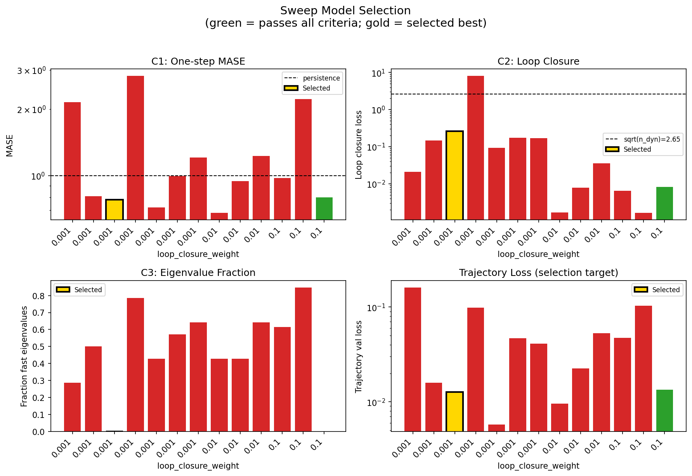
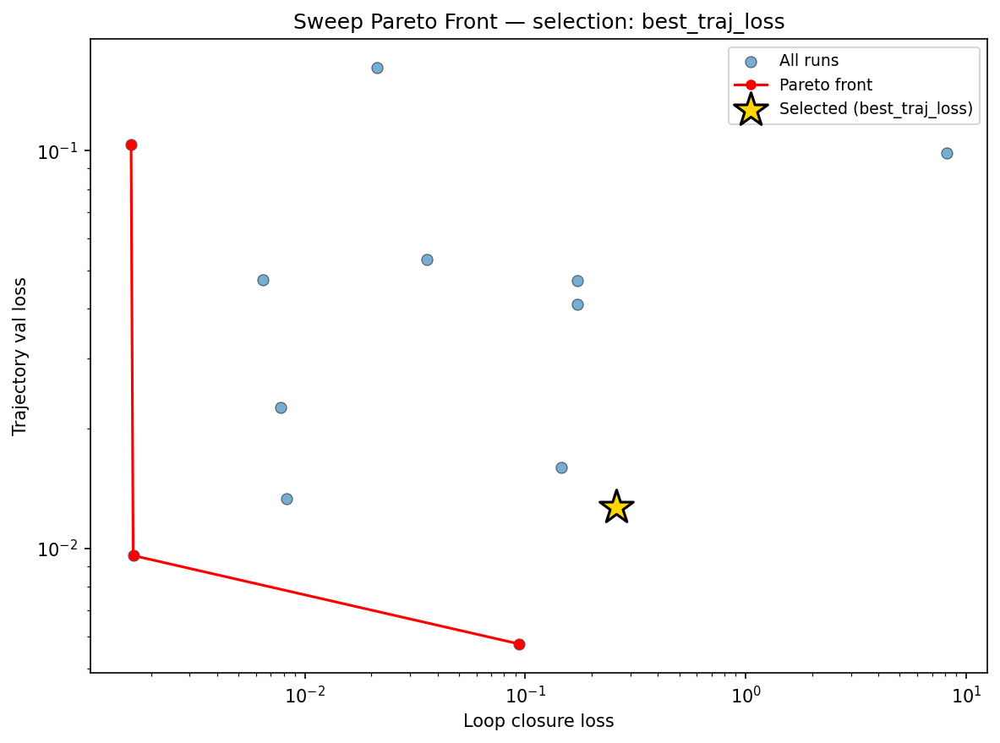
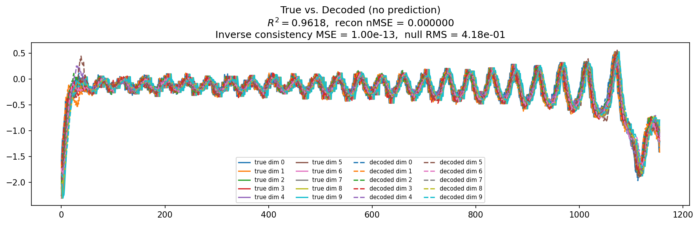
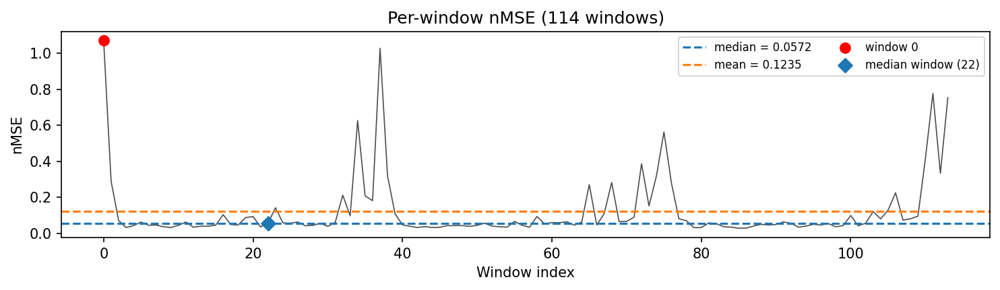
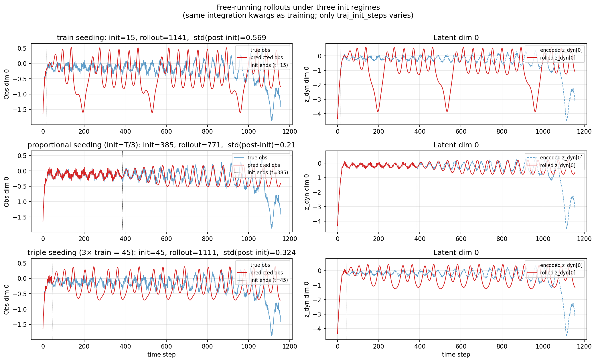
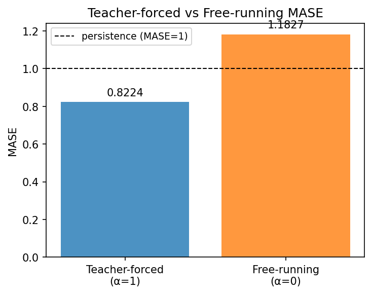
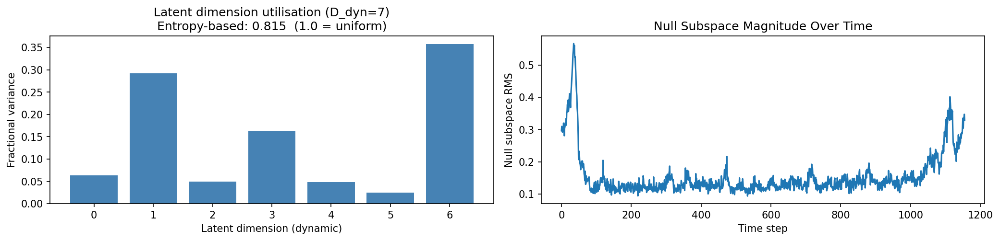
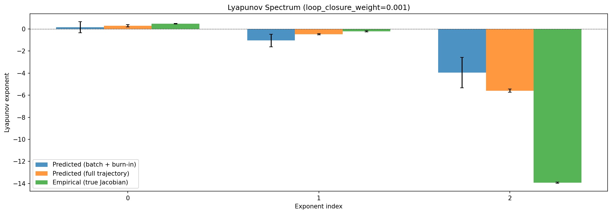
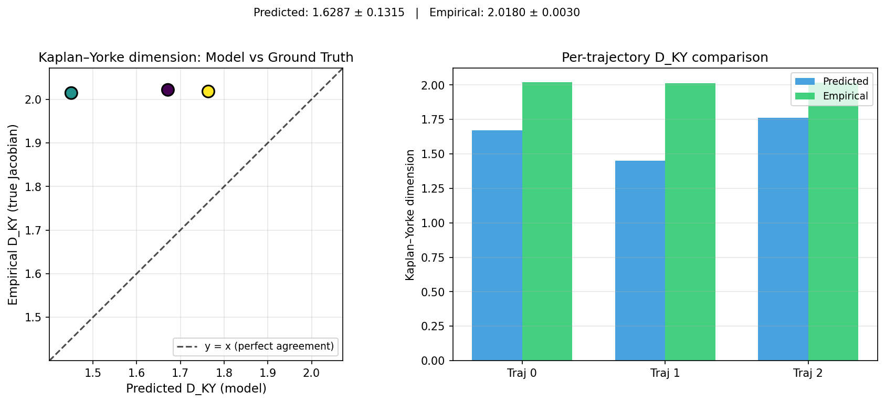
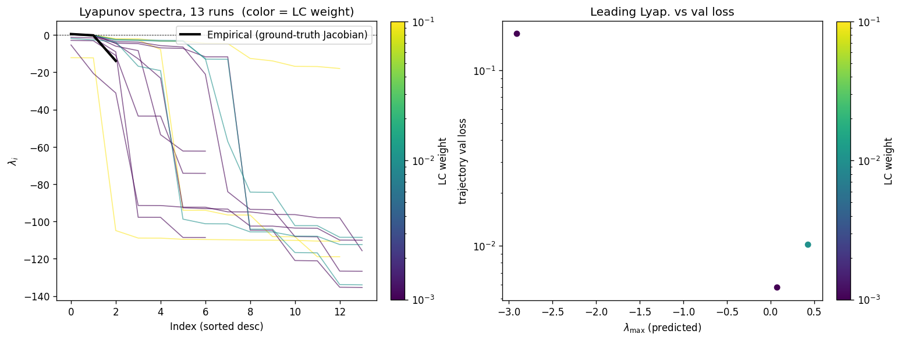
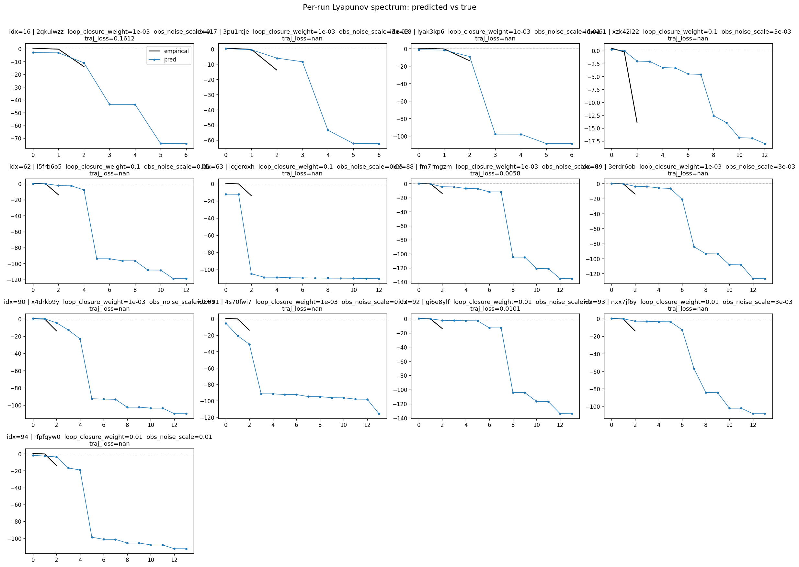
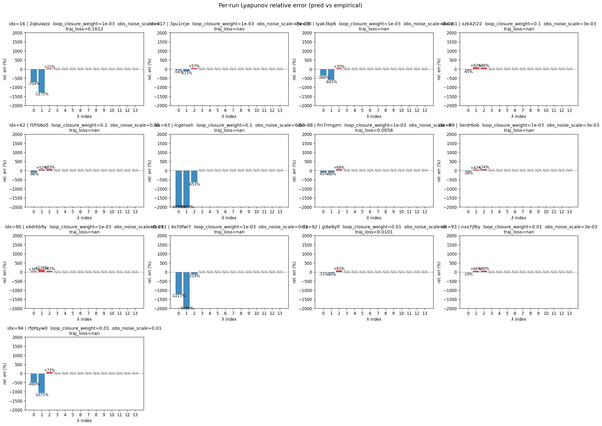
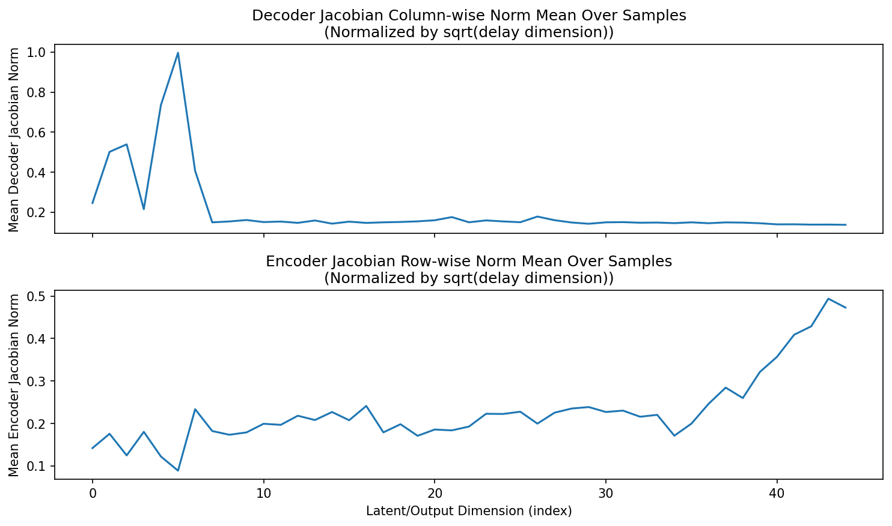
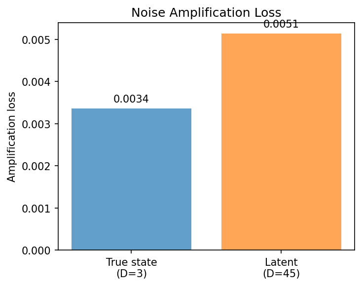
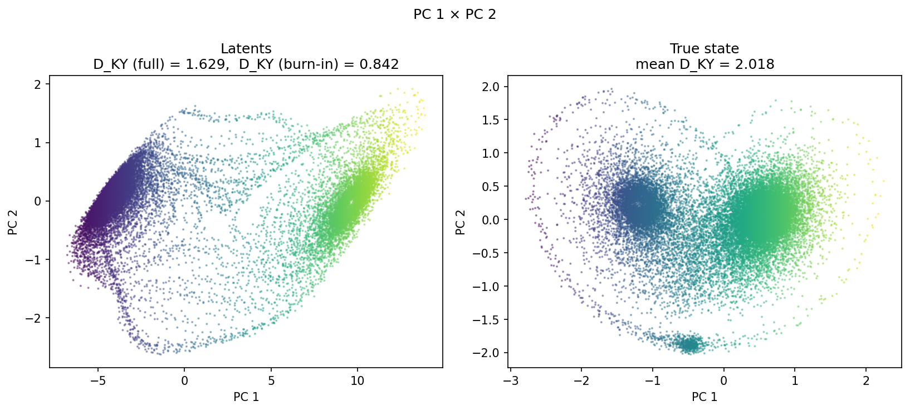
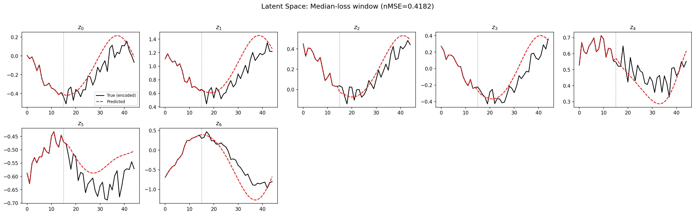
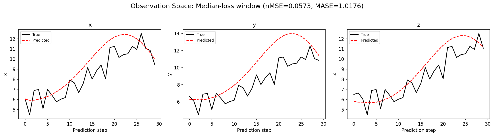
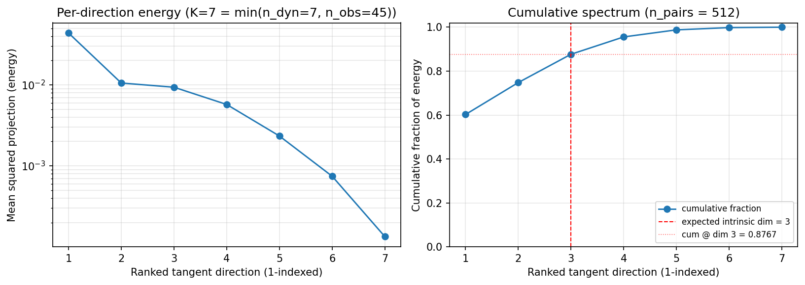
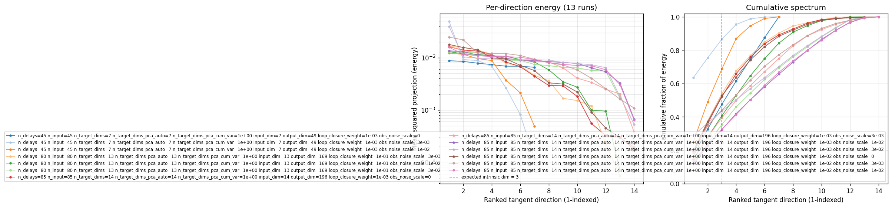
(to be written)
run_analytics stdoutrun_analyticsNo run_id provided — selecting best run from group 'lorenz_partial_additive_splitmode_p30_obsnoise005_top3nd_init15_autodim__lc_obsnoisescale_sweep' ...
Found 36 total runs in JacobianODE/Lorenz_INDpartial_NDInitSweep_autodim_D1_NormTrue__JacobianODE (group=lorenz_partial_additive_splitmode_p30_obsnoise005_top3nd_init15_autodim__lc_obsnoisescale_sweep)
All runs (state, loop_closure_weight, tangent_entropy_weight, kl_dyn_weight):
2qkuiwzz: state=finished, lc=0.001, te=0.0, kl_dyn=0.0
3pu1rcje: state=finished, lc=0.001, te=0.0, kl_dyn=0.0
lyak3kp6: state=finished, lc=0.001, te=0.0, kl_dyn=0.0
2dfc6t2j: state=finished, lc=0.001, te=0.0, kl_dyn=0.0
w2ty2awy: state=finished, lc=0.01, te=0.0, kl_dyn=0.0
5lt08xi2: state=finished, lc=0.01, te=0.0, kl_dyn=0.0
0qxo6b8q: state=finished, lc=0.01, te=0.0, kl_dyn=0.0
1t5g2ozb: state=finished, lc=0.01, te=0.0, kl_dyn=0.0
8suojnth: state=finished, lc=0.1, te=0.0, kl_dyn=0.0
ojcef707: state=finished, lc=0.1, te=0.0, kl_dyn=0.0
15wd5p3x: state=finished, lc=0.1, te=0.0, kl_dyn=0.0
860ah6q7: state=finished, lc=0.1, te=0.0, kl_dyn=0.0
kurg9rr9: state=finished, lc=0.001, te=0.0, kl_dyn=0.0
1u6w8zhg: state=finished, lc=0.001, te=0.0, kl_dyn=0.0
xh2fnuyo: state=finished, lc=0.001, te=0.0, kl_dyn=0.0
60ge77ex: state=finished, lc=0.001, te=0.0, kl_dyn=0.0
8ev8hgnw: state=finished, lc=0.01, te=0.0, kl_dyn=0.0
8dfwr394: state=finished, lc=0.01, te=0.0, kl_dyn=0.0
l7h04pw2: state=finished, lc=0.01, te=0.0, kl_dyn=0.0
5duhutn3: state=finished, lc=0.01, te=0.0, kl_dyn=0.0
frdtzzjw: state=finished, lc=0.1, te=0.0, kl_dyn=0.0
xzk42i22: state=finished, lc=0.1, te=0.0, kl_dyn=0.0
l5frb6o5: state=finished, lc=0.1, te=0.0, kl_dyn=0.0
lcgeroxh: state=finished, lc=0.1, te=0.0, kl_dyn=0.0
fm7rmgzm: state=finished, lc=0.001, te=0.0, kl_dyn=0.0
3erdr6ob: state=finished, lc=0.001, te=0.0, kl_dyn=0.0
x4drkb9y: state=finished, lc=0.001, te=0.0, kl_dyn=0.0
4s70fwi7: state=finished, lc=0.001, te=0.0, kl_dyn=0.0
gi6e8ylf: state=finished, lc=0.01, te=0.0, kl_dyn=0.0
nxx7jf6y: state=finished, lc=0.01, te=0.0, kl_dyn=0.0
rfpfqyw0: state=finished, lc=0.01, te=0.0, kl_dyn=0.0
jg8uqzwd: state=finished, lc=0.01, te=0.0, kl_dyn=0.0
e2fx6i33: state=finished, lc=0.1, te=0.0, kl_dyn=0.0
s8qexngw: state=finished, lc=0.1, te=0.0, kl_dyn=0.0
6zol08r1: state=finished, lc=0.1, te=0.0, kl_dyn=0.0
p4e2v9ac: state=finished, lc=0.1, te=0.0, kl_dyn=0.0
slurm_timeout_min not found in any run config — falling back to 180 min
Including 2qkuiwzz (lc=0.001): use_all_runs=True (state=finished)
Including 3pu1rcje (lc=0.001): use_all_runs=True (state=finished)
Including lyak3kp6 (lc=0.001): use_all_runs=True (state=finished)
Including 2dfc6t2j (lc=0.001): use_all_runs=True (state=finished)
Including w2ty2awy (lc=0.01): use_all_runs=True (state=finished)
Including 5lt08xi2 (lc=0.01): use_all_runs=True (state=finished)
Including 0qxo6b8q (lc=0.01): use_all_runs=True (state=finished)
Including 1t5g2ozb (lc=0.01): use_all_runs=True (state=finished)
Including 8suojnth (lc=0.1): use_all_runs=True (state=finished)
Including ojcef707 (lc=0.1): use_all_runs=True (state=finished)
Including 15wd5p3x (lc=0.1): use_all_runs=True (state=finished)
Including 860ah6q7 (lc=0.1): use_all_runs=True (state=finished)
Including kurg9rr9 (lc=0.001): use_all_runs=True (state=finished)
Including 1u6w8zhg (lc=0.001): use_all_runs=True (state=finished)
Including xh2fnuyo (lc=0.001): use_all_runs=True (state=finished)
Including 60ge77ex (lc=0.001): use_all_runs=True (state=finished)
Including 8ev8hgnw (lc=0.01): use_all_runs=True (state=finished)
Including 8dfwr394 (lc=0.01): use_all_runs=True (state=finished)
Including l7h04pw2 (lc=0.01): use_all_runs=True (state=finished)
Including 5duhutn3 (lc=0.01): use_all_runs=True (state=finished)
Including frdtzzjw (lc=0.1): use_all_runs=True (state=finished)
Including xzk42i22 (lc=0.1): use_all_runs=True (state=finished)
Including l5frb6o5 (lc=0.1): use_all_runs=True (state=finished)
Including lcgeroxh (lc=0.1): use_all_runs=True (state=finished)
Including fm7rmgzm (lc=0.001): use_all_runs=True (state=finished)
Including 3erdr6ob (lc=0.001): use_all_runs=True (state=finished)
Including x4drkb9y (lc=0.001): use_all_runs=True (state=finished)
Including 4s70fwi7 (lc=0.001): use_all_runs=True (state=finished)
Including gi6e8ylf (lc=0.01): use_all_runs=True (state=finished)
Including nxx7jf6y (lc=0.01): use_all_runs=True (state=finished)
Including rfpfqyw0 (lc=0.01): use_all_runs=True (state=finished)
Including jg8uqzwd (lc=0.01): use_all_runs=True (state=finished)
Including e2fx6i33 (lc=0.1): use_all_runs=True (state=finished)
Including s8qexngw (lc=0.1): use_all_runs=True (state=finished)
Including 6zol08r1 (lc=0.1): use_all_runs=True (state=finished)
Including p4e2v9ac (lc=0.1): use_all_runs=True (state=finished)
Found 36 effectively-done sweep runs:
loop_closure_weight=0.001, tangent_entropy_weight=0.0, kl_dyn_weight=0.0 -> run_id=1u6w8zhg
loop_closure_weight=0.001, tangent_entropy_weight=0.0, kl_dyn_weight=0.0 -> run_id=2dfc6t2j
loop_closure_weight=0.001, tangent_entropy_weight=0.0, kl_dyn_weight=0.0 -> run_id=2qkuiwzz
loop_closure_weight=0.001, tangent_entropy_weight=0.0, kl_dyn_weight=0.0 -> run_id=3erdr6ob
loop_closure_weight=0.001, tangent_entropy_weight=0.0, kl_dyn_weight=0.0 -> run_id=3pu1rcje
loop_closure_weight=0.001, tangent_entropy_weight=0.0, kl_dyn_weight=0.0 -> run_id=4s70fwi7
loop_closure_weight=0.001, tangent_entropy_weight=0.0, kl_dyn_weight=0.0 -> run_id=60ge77ex
loop_closure_weight=0.001, tangent_entropy_weight=0.0, kl_dyn_weight=0.0 -> run_id=fm7rmgzm
loop_closure_weight=0.001, tangent_entropy_weight=0.0, kl_dyn_weight=0.0 -> run_id=kurg9rr9
loop_closure_weight=0.001, tangent_entropy_weight=0.0, kl_dyn_weight=0.0 -> run_id=lyak3kp6
loop_closure_weight=0.001, tangent_entropy_weight=0.0, kl_dyn_weight=0.0 -> run_id=x4drkb9y
loop_closure_weight=0.001, tangent_entropy_weight=0.0, kl_dyn_weight=0.0 -> run_id=xh2fnuyo
loop_closure_weight=0.01, tangent_entropy_weight=0.0, kl_dyn_weight=0.0 -> run_id=0qxo6b8q
loop_closure_weight=0.01, tangent_entropy_weight=0.0, kl_dyn_weight=0.0 -> run_id=1t5g2ozb
loop_closure_weight=0.01, tangent_entropy_weight=0.0, kl_dyn_weight=0.0 -> run_id=5duhutn3
loop_closure_weight=0.01, tangent_entropy_weight=0.0, kl_dyn_weight=0.0 -> run_id=5lt08xi2
loop_closure_weight=0.01, tangent_entropy_weight=0.0, kl_dyn_weight=0.0 -> run_id=8dfwr394
loop_closure_weight=0.01, tangent_entropy_weight=0.0, kl_dyn_weight=0.0 -> run_id=8ev8hgnw
loop_closure_weight=0.01, tangent_entropy_weight=0.0, kl_dyn_weight=0.0 -> run_id=gi6e8ylf
loop_closure_weight=0.01, tangent_entropy_weight=0.0, kl_dyn_weight=0.0 -> run_id=jg8uqzwd
loop_closure_weight=0.01, tangent_entropy_weight=0.0, kl_dyn_weight=0.0 -> run_id=l7h04pw2
loop_closure_weight=0.01, tangent_entropy_weight=0.0, kl_dyn_weight=0.0 -> run_id=nxx7jf6y
loop_closure_weight=0.01, tangent_entropy_weight=0.0, kl_dyn_weight=0.0 -> run_id=rfpfqyw0
loop_closure_weight=0.01, tangent_entropy_weight=0.0, kl_dyn_weight=0.0 -> run_id=w2ty2awy
loop_closure_weight=0.1, tangent_entropy_weight=0.0, kl_dyn_weight=0.0 -> run_id=15wd5p3x
loop_closure_weight=0.1, tangent_entropy_weight=0.0, kl_dyn_weight=0.0 -> run_id=6zol08r1
loop_closure_weight=0.1, tangent_entropy_weight=0.0, kl_dyn_weight=0.0 -> run_id=860ah6q7
loop_closure_weight=0.1, tangent_entropy_weight=0.0, kl_dyn_weight=0.0 -> run_id=8suojnth
loop_closure_weight=0.1, tangent_entropy_weight=0.0, kl_dyn_weight=0.0 -> run_id=e2fx6i33
loop_closure_weight=0.1, tangent_entropy_weight=0.0, kl_dyn_weight=0.0 -> run_id=frdtzzjw
loop_closure_weight=0.1, tangent_entropy_weight=0.0, kl_dyn_weight=0.0 -> run_id=l5frb6o5
loop_closure_weight=0.1, tangent_entropy_weight=0.0, kl_dyn_weight=0.0 -> run_id=lcgeroxh
loop_closure_weight=0.1, tangent_entropy_weight=0.0, kl_dyn_weight=0.0 -> run_id=ojcef707
loop_closure_weight=0.1, tangent_entropy_weight=0.0, kl_dyn_weight=0.0 -> run_id=p4e2v9ac
loop_closure_weight=0.1, tangent_entropy_weight=0.0, kl_dyn_weight=0.0 -> run_id=s8qexngw
loop_closure_weight=0.1, tangent_entropy_weight=0.0, kl_dyn_weight=0.0 -> run_id=xzk42i22
Dropping 23 run(s) with no checkpoint dir: ['1u6w8zhg', '2dfc6t2j', '60ge77ex', 'kurg9rr9', 'xh2fnuyo', '0qxo6b8q', '1t5g2ozb', '5duhutn3', '5lt08xi2', '8dfwr394', '8ev8hgnw', 'jg8uqzwd', 'l7h04pw2', 'w2ty2awy', '15wd5p3x', '6zol08r1', '860ah6q7', '8suojnth', 'e2fx6i33', 'frdtzzjw', 'ojcef707', 'p4e2v9ac', 's8qexngw']
n_dims=45, n_latent=45, n_dyn=7, dt=0.0150
run=2qkuiwzz: DiagnosticMetrics(one_step_mase=2.1492412090301514, loop_closure_loss=0.021185364574193954, fast_eigenvalue_fraction=0.2857142984867096, trajectory_val_loss=0.16122040152549744) (from W&B history)
run=3erdr6ob: DiagnosticMetrics(one_step_mase=0.8073654770851135, loop_closure_loss=0.14517994225025177, fast_eigenvalue_fraction=0.5, trajectory_val_loss=0.01596161350607872) (from W&B history)
run=3pu1rcje: DiagnosticMetrics(one_step_mase=0.7808202505111694, loop_closure_loss=0.2595497965812683, fast_eigenvalue_fraction=0.0, trajectory_val_loss=0.012666149996221066) (from W&B history)
run=4s70fwi7: DiagnosticMetrics(one_step_mase=2.824467182159424, loop_closure_loss=8.160231590270996, fast_eigenvalue_fraction=0.7857142686843872, trajectory_val_loss=0.09862762689590454) (from W&B history)
run=fm7rmgzm: DiagnosticMetrics(one_step_mase=0.7192159295082092, loop_closure_loss=0.09367725253105164, fast_eigenvalue_fraction=0.4285714328289032, trajectory_val_loss=0.005753418896347284) (from W&B history)
run=lyak3kp6: DiagnosticMetrics(one_step_mase=0.9946412444114685, loop_closure_loss=0.17275884747505188, fast_eigenvalue_fraction=0.5714285969734192, trajectory_val_loss=0.047042910009622574) (from W&B history)
run=x4drkb9y: DiagnosticMetrics(one_step_mase=1.2071521282196045, loop_closure_loss=0.17152734100818634, fast_eigenvalue_fraction=0.6428571343421936, trajectory_val_loss=0.041054617613554) (from W&B history)
run=gi6e8ylf: DiagnosticMetrics(one_step_mase=0.6793082356452942, loop_closure_loss=0.0016605791170150042, fast_eigenvalue_fraction=0.4285714328289032, trajectory_val_loss=0.009597032330930233) (from W&B history)
run=nxx7jf6y: DiagnosticMetrics(one_step_mase=0.9454768896102905, loop_closure_loss=0.007754601072520018, fast_eigenvalue_fraction=0.4285714328289032, trajectory_val_loss=0.022590655833482742) (from W&B history)
run=rfpfqyw0: DiagnosticMetrics(one_step_mase=1.2270336151123047, loop_closure_loss=0.03579332306981087, fast_eigenvalue_fraction=0.6428571343421936, trajectory_val_loss=0.053192321211099625) (from W&B history)
run=l5frb6o5: DiagnosticMetrics(one_step_mase=0.9752206802368164, loop_closure_loss=0.006465144921094179, fast_eigenvalue_fraction=0.6153846383094788, trajectory_val_loss=0.04741484299302101) (from W&B history)
run=lcgeroxh: DiagnosticMetrics(one_step_mase=2.2175209522247314, loop_closure_loss=0.0016246660379692912, fast_eigenvalue_fraction=0.8461538553237915, trajectory_val_loss=0.10370142012834549) (from W&B history)
run=xzk42i22: DiagnosticMetrics(one_step_mase=0.7985732555389404, loop_closure_loss=0.008254220709204674, fast_eigenvalue_fraction=0.0, trajectory_val_loss=0.013356281444430351) (from W&B history)
Ranking method: best_traj_loss
Best run ID: 3pu1rcje
Best loop_closure_weight: 0.001
Best tangent_entropy_weight: 0.0
Best kl_dyn_weight: 0.0
Best traj loss: 0.012666
Criteria applied: ['C1', 'C2', 'C3']
Surviving: 2 / 13
Auto-selected run_id: 3pu1rcje
======================================================================
PARETO FRONTIER RUNS (3 runs)
======================================================================
Run ID LC Loss Traj Val Loss
------------ -------------- --------------
lcgeroxh 0.001625 0.103701
gi6e8ylf 0.001661 0.009597
fm7rmgzm 0.093677 0.005753
======================================================================
RANKING METHOD COMPARISON (over 2 survivors)
======================================================================
Method Run ID LC Loss Traj Val Loss
---------------------- ------------ -------------- --------------
best_traj_loss 3pu1rcje 0.259550 0.012666 <-- active
pareto_knee xzk42i22 0.008254 0.013356
geo_rank 3pu1rcje 0.259550 0.012666
minimax_rank 3pu1rcje 0.259550 0.012666
geo_log_score 3pu1rcje 0.259550 0.012666
minimax_log_score xzk42i22 0.008254 0.013356
======================================================================
Loading run 3pu1rcje from JacobianODE/Lorenz_INDpartial_NDInitSweep_autodim_D1_NormTrue__JacobianODE ...
Loading checkpoint epoch=27-step=5600.ckpt...
Train dataset shape: torch.Size([24442, 45, 45])
Validation dataset shape: torch.Size([7777, 45, 45])
Test dataset shape: torch.Size([3333, 45, 45])
Train trajectories dataset shape: torch.Size([22, 1156, 45])
Validation trajectories dataset shape: torch.Size([7, 1156, 45])
Test trajectories dataset shape: torch.Size([3, 1156, 45])
Loading checkpoint epoch=27-step=5600.ckpt...
Computing reconstruction ...
Computing MASE ...
Teacher-forced MASE: 0.8224
Free-running MASE: 1.1827
Computing latent utilization ...
Entropy-based utilization: 0.815
Null subspace mean RMS: 1.695595e-01
Computing Lyapunov exponents ...
Computing full-trajectory Lyapunov (3 test trajs, T=1156) ...
Predicted Lyapunov exponents (batch+burn-in, 128 windowed trajs):
λ_1 = +0.1650 ± 0.4991
λ_2 = -1.0384 ± 0.5662
λ_3 = -3.9498 ± 1.3714
λ_4 = -8.8084 ± 0.5839
λ_5 = -53.6610 ± 0.4722
λ_6 = -62.0935 ± 0.1007
λ_7 = -62.2810 ± 0.1008
Predicted Lyapunov exponents (full-length, 3 test trajs):
λ_1 = +0.3043 ± 0.1069
λ_2 = -0.4757 ± 0.0522
λ_3 = -5.5843 ± 0.1442
λ_4 = -8.3004 ± 0.0827
λ_5 = -53.5436 ± 0.0467
λ_6 = -62.2714 ± 0.0087
λ_7 = -62.3277 ± 0.0169
Empirical Lyapunov exponents (mean ± std):
λ_1 = +0.4677 ± 0.0259
λ_2 = -0.2173 ± 0.0549
λ_3 = -13.9174 ± 0.0513
Mean KY dim (predicted): 1.629 ± 0.132
Mean KY dim (empirical): 2.018 ± 0.003
Mean KY dim (burn-in): 0.842 ± 0.716
Computing prediction windows ...
Windows: 114 — nMSE min=0.0297, median=0.0572, mean=0.1235, max=1.0692
Computing long-trajectory free-running rollouts ...
Computing encoder/decoder Jacobians ...
encoder_jacobian: (128, 45, 45)
decoder_jacobian: (128, 45, 45)
Computing amplification loss ...
Amplification loss — True state: 0.003366
Amplification loss — Latent: 0.005144
Computing tangent space spectrum ...